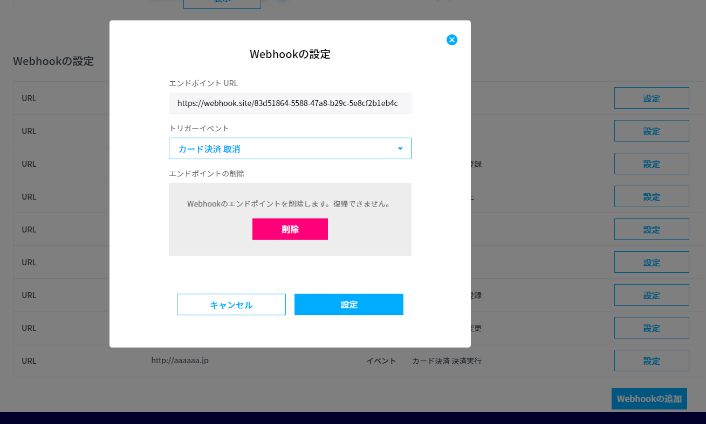

在测试环境设置通知（Webhook）
通过 Webhook 可在执行支付、取消等操作时接收通知。
可按要接收的通知分别指定商户的应用 URL。
有关 Webhook 规范，请参阅开发与监控－使用 Webhook。
Webhook 事件一览
下表列出可从 fincode 接收的部分 Webhook 事件。
| 功能 | 事件名称 | 事件参数 |
|---|---|---|
| 卡片支付 | 登记支付 | payments.card.regist |
| 卡片支付 | 执行支付 | payments.card.exec |
| 卡片支付 | 请款 | payments.card.capture |
| 卡片支付 | 取消 | payments.card.cancel |
| 卡片支付 | 重新授权 | payments.card.auth |
| 卡片支付 | 修改金额 | payments.card.change |
| 卡片 | 登记 | card.regist |
| 卡片 | 更新 | card.update |
| 订阅（卡片） | 登记 | subscription.card.regist |
| 订阅（卡片） | 解约 | subscription.card.delete |
| 订阅（卡片） | 更新 | subscription.card.update |
| 订阅（卡片） | 结果汇总 | recurring.card.batch |
详情请参阅 Webhook 设置 。
设置 Webhook 通知
可通过控制面板设置 Webhook，也可以通过 Webhook 设置 API 配置。
指定要配置通知的事件，并输入商户的应用 URL。

按图中方式设置后，商户服务器可通过 Webhook 通知确认客户端（电商网站）已成功执行支付。
在测试环境执行支付。请按该页步骤执行支付并测试。